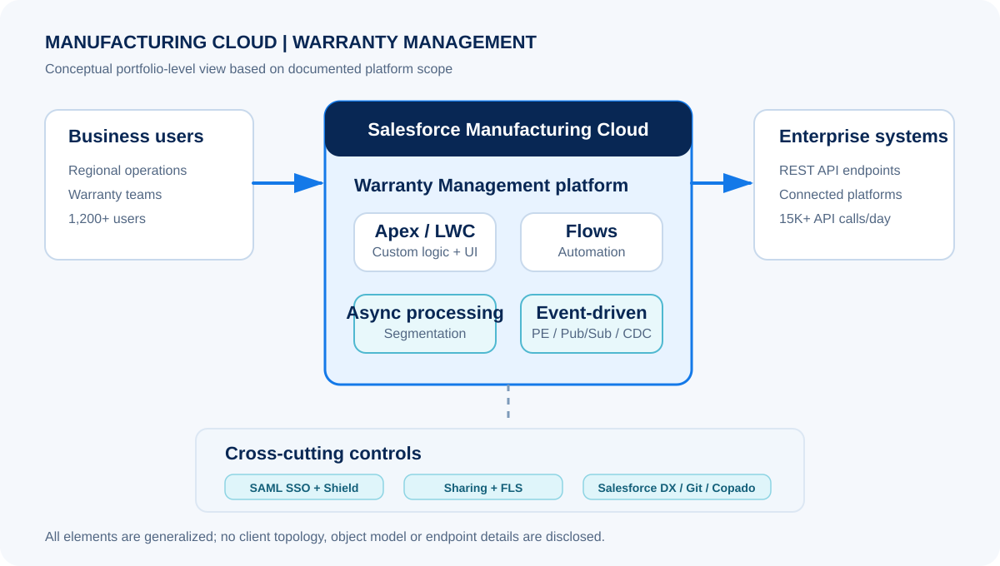

Manufacturing Cloud
Warranty Management platform
Regional users, Manufacturing Cloud application services, scalable Apex/LWC and Flow processing, event-driven synchronization, integrations and cross-cutting security and DevOps controls.
Read case study ↗